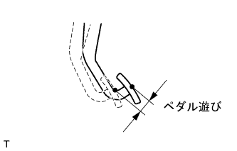

Brake Pedal Support Assembly Adjustment |
| 1. Inspect and Adjust Brake Pedal Height |
 |
Inspect brake pedal height
Turn back the carpet.
Turn back the dash silencer from the slit in the dash silencer.
Measure the shortest distance from the brake pedal pad to the dash panel.
Adjust brake pedal height
Disconnect the stop light switch connector.
Loosen the clevis lock nut, and turn the push rod to adjust the pedal height.
Tighten the clevis lock nut.
 |
Insert the stop light switch into the adjuster until the stop light switch contacts the brake pedal.
 |
Turn the stop light switch approximately 1/4 turn clockwise.
Connect the stop light switch connector.
Check the shaft protrusion (amount of projection).
Check that the stop lights do not illuminate when the brake pedal is not depressed.
| 2. Inspect Brake Pedal Free Play |
After stopping the engine, depress the pedal firmly several times until there is no vacuum in the brake booster.
 |
Inspect the brake pedal free play.
If the free play is 1mm or less, check the shaft protrusion of the stop light switch assembly.
| 3. Inspect Brake Pedal Reserve Distance |
Inspect the brake pedal reserve distance.